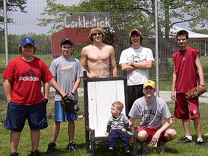
Opening Day featured a pair of rookies and four veterans - pictured left to right: Evan Woodard, Donnie Hackney, Robert Trimble, Nate Owens, Tad Goldman and Caleb and Patrick Cork in front. |
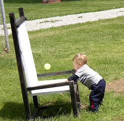
For the second year in a row Caleb Cork threw out the ceremonial first pitch. |
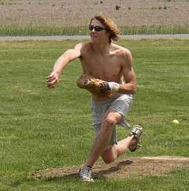
Robert Trimble picked up the first win of the season allowing just one run and striking out a career-high 15. |
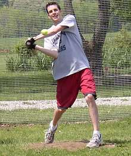
Patrick Cork finished the day 9-for-23 with a run and an RBI. |
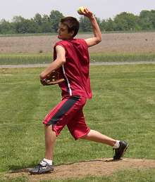
In his first chair baseball appearance Tad Goldman allowed just 8 hits but suffered the loss due to three unearned runs. |
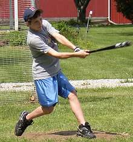
Donnie Hackney lines a single into left field in the opener. |
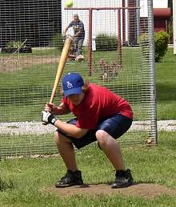
Evan Woodard ducks out of the way of an inside fastball. Woodard finished the day 3-for-22. |
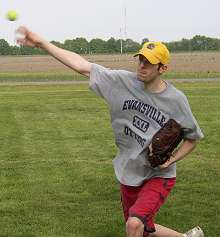
Patrick Cork fired a one-hit shutout in the second game of the day striking out 11 batters. |
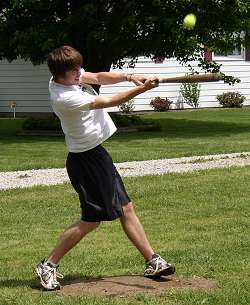
Nate Owens was 6-for-23 on the day with no hit being bigger than his game-winning single in the bottom of the 9th inning in game number two. |
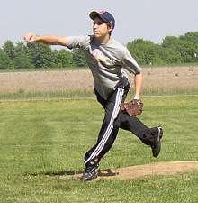
Donnie Hackney was dominant on the hill in his debut striking out 14 batters and allowing just one run and 7 hits. |
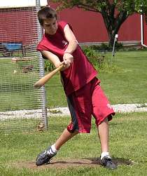
Tad Goldman made his first appearance at Corklestick finishing with a pair of singles. |
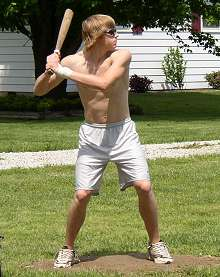
Robert Trimble was 4-for-22 with a run scored on Opening Day. |